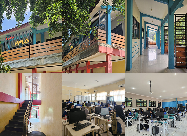
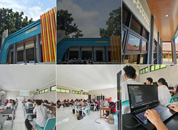
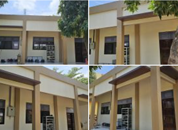
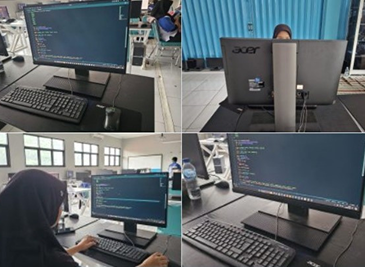
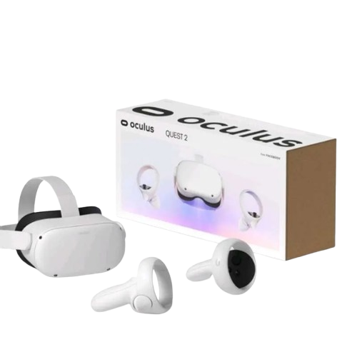
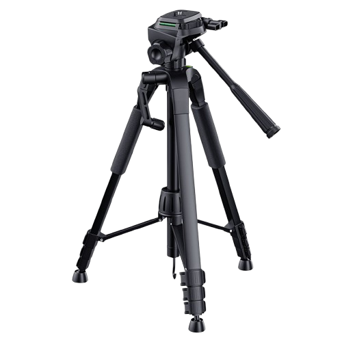
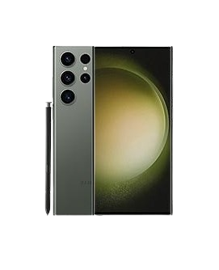
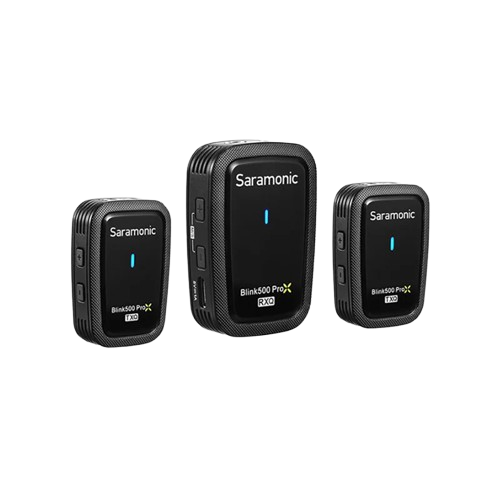
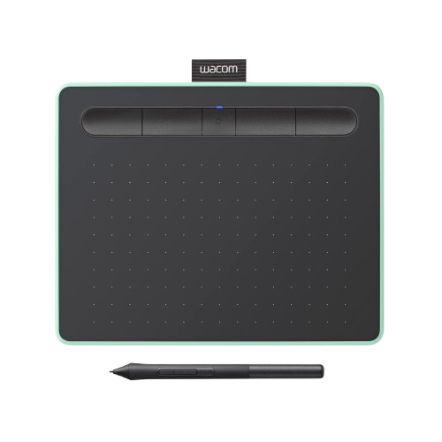
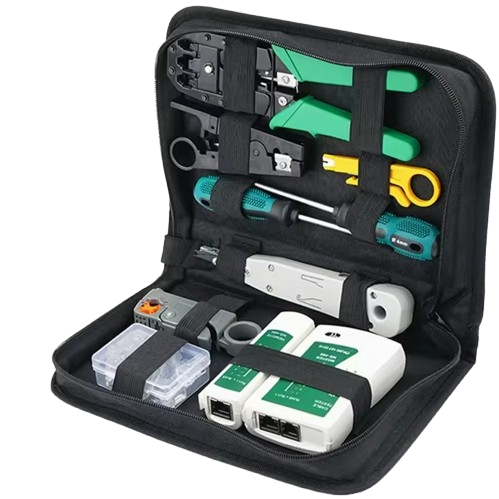

Galeri Fasilitas





Kacamata VR PPLG SMK N 1 Kandeman menghadirkan pengalaman pembelajaran interaktif dan visual yang lebih menarik dengan teknologi virtual reality.

Tripod PPLG SMK N 1 Kandeman adalah alat yang digunakan untuk menopang kamera agar hasil foto dan video lebih stabil dan berkualitas.

Samsung S23 Ultra digunakan untuk mendokumentasikan kegiatan siswa dalam bidang desain dan pengembangan konten multimedia.

Mikrofon wireless PPLG SMK N 1 Kandeman digunakan untuk merekam suara jernih pada produksi video dan dokumentasi kegiatan sekolah.

Wacom Graphics Tablet PPLG SMK N 1 Kandeman digunakan untuk mendukung kegiatan siswa dalam bidang desain grafis dan ilustrasi digital.

Perlengkapan alat perakitan komputer PPLG SMK N 1 Kandeman digunakan untuk mendukung kegiatan praktik perakitan dan perawatan perangkat keras.